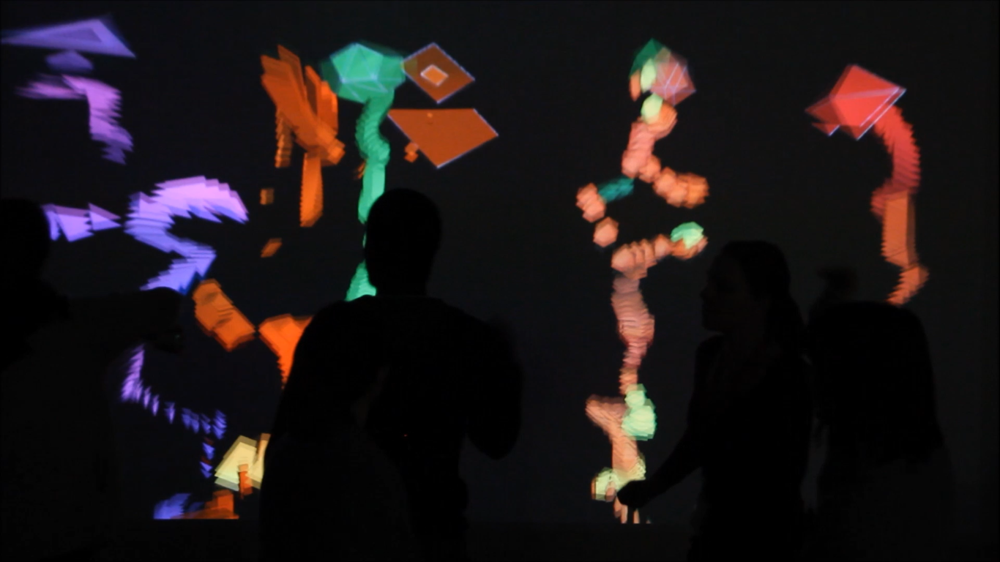
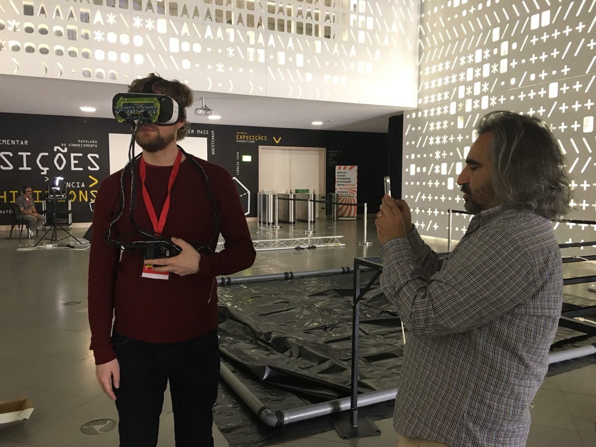
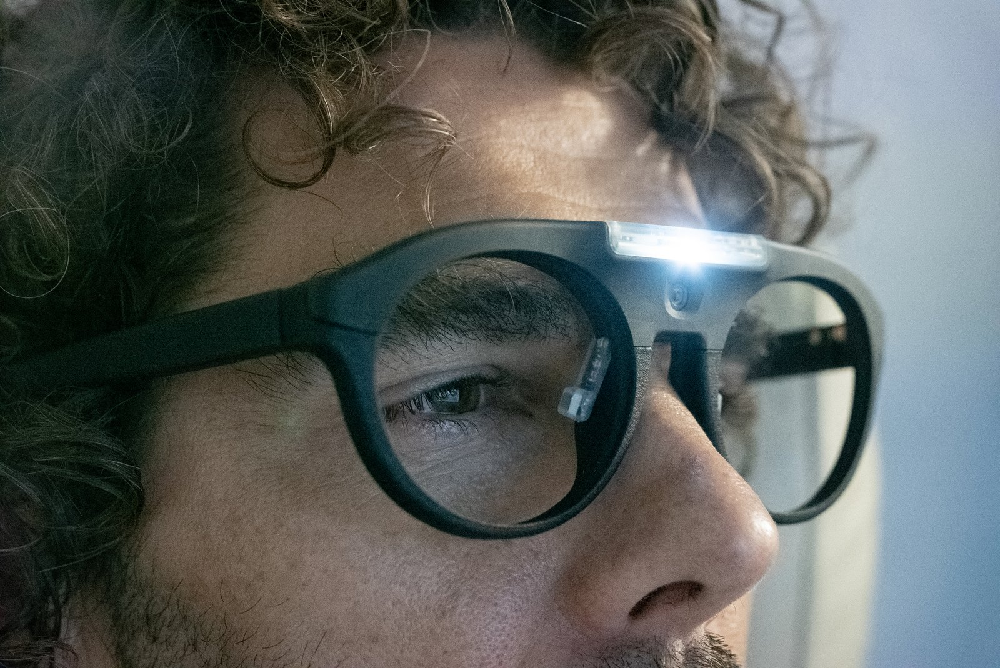
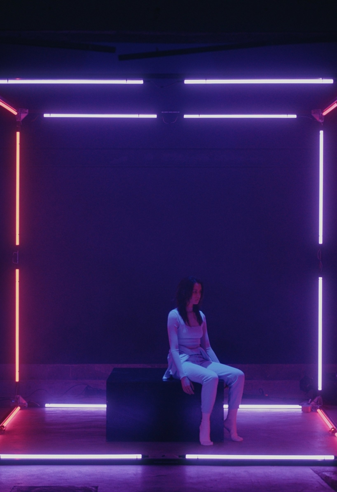
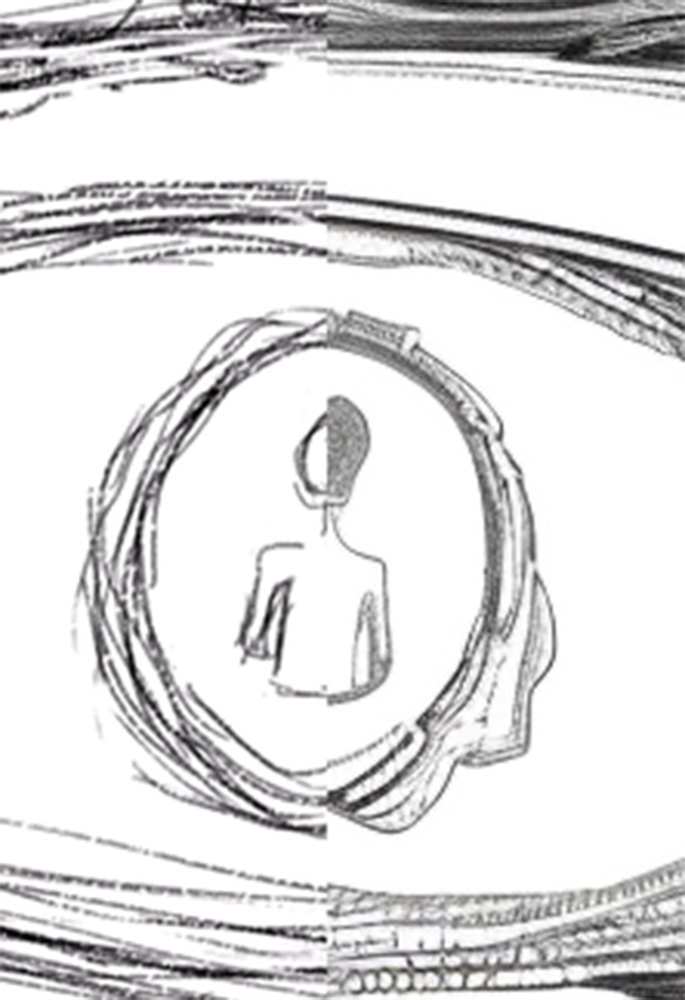
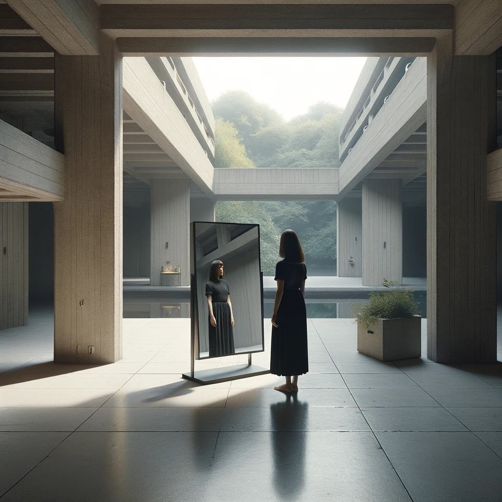

What is it like
to experience?
Yourself. Another person. A forest. A machine.
States
Spaces



COLLECTIVE MOTION LABPsiloscope2016
2018
COLLECTIVE MOTION LABMindCrystal2018

OPEN-AIR EXPERIMENTHuman Open Field2019

FIELD STUDYLatent States Camp2023–
BRAIN-DRIVEN INSTALLATIONPolylith2022
BRAIN-DRIVEN INSTALLATIONAtavic Forest2022

BRAIN-DRIVEN INSTALLATIONLatent Space I2022

BRAIN-DRIVEN INSTALLATIONPalimpsest2023

MIRROR STUDYAltered Reflections2024
SENSORY DEPRIVATIONSubmersion2024